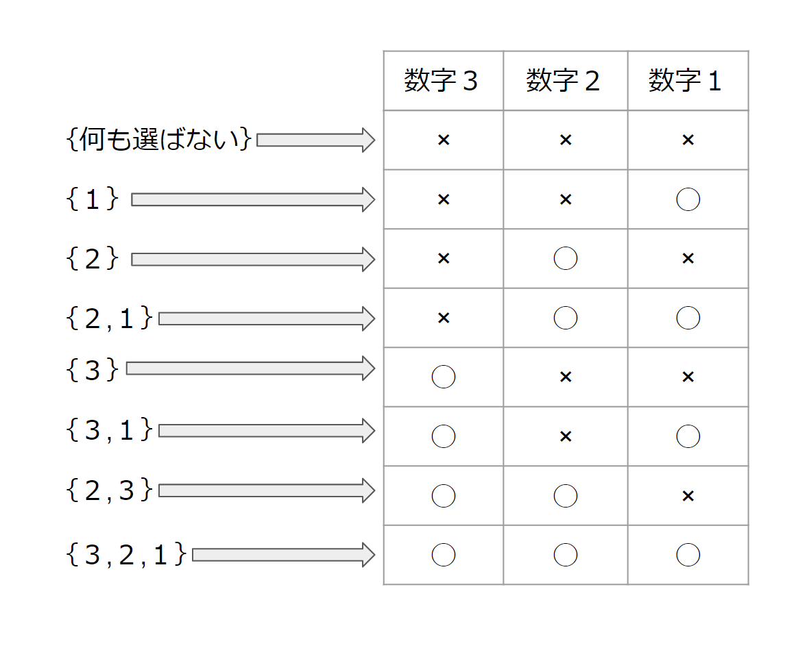
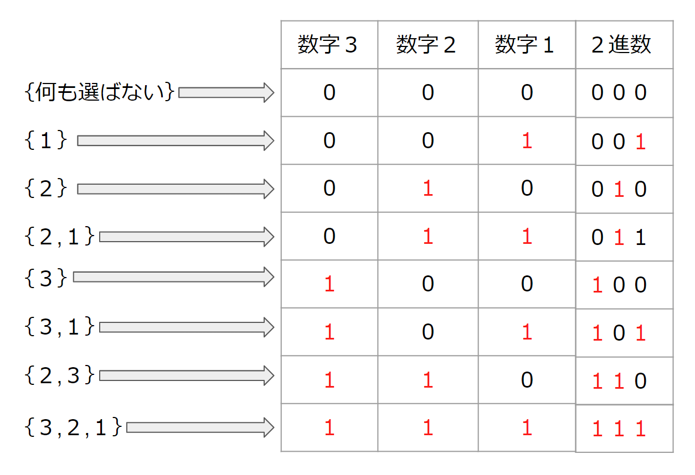
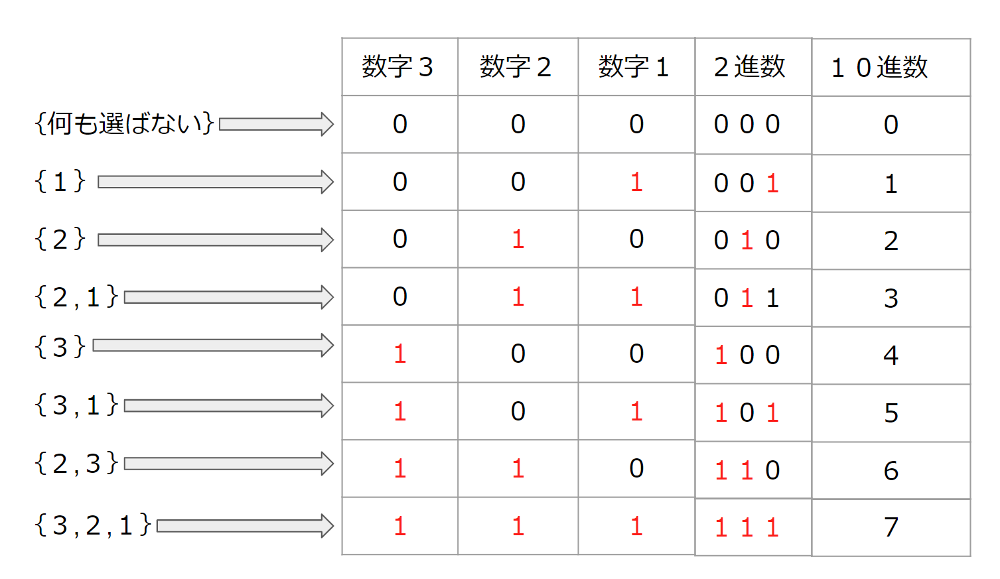

概要
2^N通りあるN 個のものから、いくつか選んだ組合せを全探索するアルゴリズム
bit全探索について
上記の通り、2^N通りあるN 個のものから、いくつか選んだ組合せを全探索するアルゴリズムです。 簡単な考え方を下記に記載します。
具体例
整数1,2,3が与えられる場合、その中からいくつかを選ぶ方法を列挙する場合は8通りあると考えられます。
ここでなぜ8通りなのか考えてみます。各数字3,2,1についてそれぞれが選ぶ・選ばないの選択肢を持っています。 つまり各々の整数に対して2つの選択肢があることから、今回の3つの整数の選択肢は2^3通り(選ぶ・選ばないの2つの選択肢を持つ要素が3つあるため)であると考えられます。 n個のものから、いくつか選んだ組み合わせを探すなら、全探索でよいのではないかと考える方がいるかもしれませんが、そうした場合はn重のfor文が必要になり、コードが大変なことになります。
これらをbit全探索で実装すると少ないコードで完結することができるようになります。それではbit全探索の実装をしていきます。
手順
1, for文の条件を記述するために、いくつか選ぶ方法を2進数で表し、for文の条件式で2進数を10進数に戻し条件を記述する。
2, if文で10進数から2進数に変換し、各桁に1が立っているか判定して処理を実行する。
実装
まず手順1の、いくつか選ぶ方法を2進数で表します。つまり選んだ場合は"1"、選ばない場合を"0"として2進数を10進数に変換します。
そして、その2進数を10進数に変換します。
この時に全てを選んだ時の2進数"111"の10進数が7になっていることに注目します。0~7の8個、つまり0から2^3-1の範囲をforの条件式に指定することができるようになります。 そうすることで全てのパターンを列挙できます。 forの条件式をc++で記述していきます。